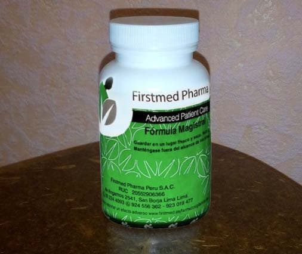
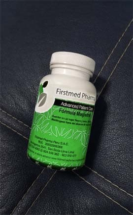
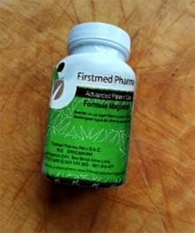
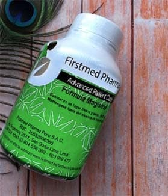

Есть стереотип, что IT-профессии с высокими зарплатами и большими возможностями - это для самых умных, и “простой смертный” должность программиста не осилит.
Я уже устал развенчивать этот стереотип. Повторяю в последний раз: КАЖДЫЙ ИЗ ВАС МОЖЕТ СТАТЬ И ПРОГРАММИСТОМ, И ДИЗАЙНЕРОМ... Удаленно работать, получать хорошую зарплату и позволить себе новое авто, путешествия... Да все, что угодно!
Даже если не блещете умом.
Даже если подводит память.
Даже если плохо учились в школе и не окончили универ.
В ПОСЛЕДНИЙ РАЗ делюсь с вами рецептом быстрого доступа в мир больших возможностей с зарплатой 3000+$ в месяц.
И не говорите потом, что вы его не видели...
IT specialist Notes
Реально ли прокачать мозг без высшего образования? – Да!
Если что, я и сам далеко не гений и не продвинутый “технарь”. Универ и даже колледж я не окончил - слишком сложно было учиться, плохо все запоминал.
До пандемии я работал официантом в кафе. А когда всех закрыли и отправили на удаленку - вылетел с работы в числе первых. В тяжелые времена я остался без заработка - как и большинство людей в похожей ситуации. Пытался устроиться хоть куда-нибудь, но либо знаний не хватало, либо опыта. Быть пожизненно курьером на побегушках меня не устраивало. А единственные, кто с этими бесконечными карантинами более-менее сейчас держится на плаву - это как раз курьеры и айтишники.
Вот и задумался я: как бы мне стать IT-специалистом - с моим-то гуманитарным складом ума и нулевыми познаниями в технологиях?
IT specialist Notes
Среди моих знакомых IT-шник был только один - мой бывший одноклассник. Жил он по сравнению со мной припеваючи: целыми днями сидел дома, что-то делал на компьютере и получал за это бешеные деньги.
Сказал мне, что на этом рынке конкуренции никакой.
Среди местных айтишников маловато, поэтому он ценный сотрудник. Даже если он будет плохо работать
и весь день играть в игры,
то его все равно не уволят.
Yan Naumov
Г., 13:21
го катку в кс!
ты же работаешь
да го, все ок
IT specialist Notes
Мне стало обидно, что я вовремя не получил образование. Но почему бы и не попробовать учиться самостоятельно? Мне иногда попадались в интернете истории обычных людей, которые даже в 50 лет,
когда мозги и память уже не те, самостоятельно переучились на другую профессию и потом достигли больших успехов. Я стал искать такие истории, чтобы вдохновиться. Расскажу вам две, которые меня реально мотивировали.
История №1
Обычный тракторист в 42 года ушел в IT,
чтобы оплатить лечение жены.
В целом его история очень берет за душу. Зарабатывал трактористом немного, но хватало. Жили без роскоши и тут такое несчастье - жена заболела. Что делать? Набрал кредитов, а отдать не смог. В итоге, лишился половины имущества, включая трактор. Мужик сильно переживал, и тут помог парень старшей дочки: подсказал, что можно хорошо заработать в IT. Переучиться и стать, например, Java-разработчиком. Он занимался и день и ночь, но шло очень туго, ничего не получалось. Голова уже работала не так как в молодости и память подводила. Было так сложно, что он собрался уже все бросить. Потом ему посоветовали какой-то препарат для памяти. Он стал его принимать и через неделю и у него начался прогресс: 6-месячную программу усвоил за месяц. Шок, не иначе.
IT specialist Notes
Итог: дяденька случайно заметил какой-то баг в одном приложении на телефоне, написал им в поддержку и рассказал как исправить. С ним связались и предложили работу.
И теперь приложение этого тракториста есть практически у каждого из нас на телефоне. И самое важное, он выплатил все долги, вылечил жену, оплатил образование детям, купил новый большой дом и даже осуществил детскую мечту – большой и красивый катер. Теперь он работает часов по 6 в день, а все остальное время проводит с семьей.
История №2
Эта история ближе мне по духу. В ней парень моего возраста из бедной семьи. Он даже не закончил школу и устроился работать на мойку. В итоге он самостоятельно изучил тестирование. Спустя полгода дорос до QA-лида в компании аутсорс-тестирования. Как ему это удалось? Многие годами не могут достичь таких результатов.
IT specialist Notes
Про себя этот парень говорил, что он тупой как пробка, и моментально все забывает. Как же тогда у него все получилось? Да просто искал однажды средство от головной боли, а нашел “допинг для ума” Memory Plus. С ним то и пошло дело!
IT specialist Notes

Парень стал быстрее перерабатывать и запоминать новую информацию, пытался заниматься программированием и разработкой. И все у него получалось. В итоге он выбрал для себя самую комфортную сферу - тестирование программ, и теперь считается одним из лучших специалистов.
Нашли, что общего в этих двух историях? Да, верно – мозговой стимулятор для памяти. Именно он помогает людям повысить работоспособность на 200%. Я понял, что мне такой тоже нужен, иначе я так и не выберусь из нищеты.
IT с нуля реально? – Да!
Я решил начать свой путь с Memory Plus, потому что у меня всегда было плохо с памятью, и учеба не давалась. Нашел, где его купить
(спойлер: в аптеках у нас в городе его нет, брал напрямую
у производителя) и стал принимать. Через неделю вся та информация,
что казалась мне китайскими иероглифами, стала для меня такой же простой и легкой как 2+2.
И дело пошло. Я ознакомился и прошел вводную часть за пару дней, когда обычному неподготовленному человеку нужно минимум месяц. Я “щелкал” сложный материал как семечки, параллельно практикуясь.
А главное, ЭТА ИНФОРМАЦИЯ НАДОЛГО УДЕРЖИВАЛАСЬ В ПАМЯТИ!
Когда я понял, что готов, то написал обширное “техническое” письмо компании, где работал мой ленивый IT-друг. Они сразу мне перезвонили и пригласили на собеседование. Директору хватило 5 минут общения со мной, чтобы принять меня на работу в качестве стажера.
IT specialist Notes
В первый месяц работы был страх, что я что-то сделаю не так, и меня уволят. Когда ты учишься, то в теории – все понятно, но когда приступаешь к практике, то теряешься: как работают все процессы; как не запутаться в терминологии и запомнить столько новой информации.
Поэтому я решил пропить еще один курс Memory Plus. Я помнил все, даже то, что читал полгода назад. Надолго в стажерах я не задержался, а практически сразу ушел в отдел разработки приложений.
IT specialist Notes
Так я стал начальником своего ленивого друга и сразу сказал, что если он не будет работать, то я его уволю. Затем еще дальше продвинулся: отправил свое резюме в одну из лидирующих IT-компаний на рынке, и мне пришел положительный ответ. Перспектива получать хорошие деньги, занимаясь интересным делом и обеспечить своей семье лучшую жизнь – очень меня обрадовала и я согласился, о чем не жалею.
Теперь у меня большой и красивый дом, работа мечты и счастливая семья.
IT specialist NotesIT specialist NotesIT specialist Notes
Я не был рожден вундеркиндом, а достиг успеха благодаря упорству, труду, любви к своему ремеслу и Memory Plus.
Наверное без последнего бы у меня ничего не получилось. Я благодарен мотивирующим меня историям обычных людей, которые не только вдохновили на действие,
но и подсказали, что достичь целей можно быстро, если стимулировать работу мозга и улучшить свою память.
IT specialist Notes

Вы тоже достойны успеха! Даже если думаете, что мозгов у вас не хватит, а учиться и переучиваться слишком долго и нудно. А как это сделать быстро, я вам не рассказал.
У вас обязательно все получится!
Комментарий эксперта:
IT specialist Notes
Джон Роуз, специалист отдела биохимии, генетики и патологий головного мозга и ЦНС
Первые так называемые “таблетки для ума” были выпущены в начале 70-х. Современные их вариации помогли людям
улучшить умственную деятельность, концентрацию внимания и стимулировать память.
Благодаря таким средствам, человек способен решать задачи любой сложности в кратчайшие сроки. Клетки мозга снабжаются кислородом и глюкозой втрое больше, чем обычно,
чувство усталости не приходит дольше.
Человек энергичен, ощущает прилив сил и улучшение настроения.
Последнее средство для улучшения умственных способностей, памяти и концентрации внимания Memory Plus,
была разработана для тех, кто вынужден ежедневно находиться на пике мозговой активности.
От способности человека сосредоточиться
и максимально использовать свои возможности зависит его успех и положение в обществе.
Конечно же Memory Plus не сделает вас гением, но
поможет восстановить когнитивные способности и мобилизовать их.
Повысит работоспособность, улучшит концентрацию, способность к запоминанию и обработке новой информации и общее самочувствие.
Депрессия, бессонница, частые перепады настроения и невозможность сосредоточиться останутся в прошлом.
Вы сможете легко запоминать большое количество информации. Издание одного из ведущих медицинских журналов, известное своими независимыми материалами, называет Memory Plus “Секретом величайших умов“.
Ты просто нереальный. У меня нет слов от того, чего ты смог достичь. И спасибо, что рассказал правду как это сделать.
ОтветитьПоделиться
Инна
Мне это средство посоветовал преподаватель. Признаю, теперь чувствую себя более собранной и сконцентрированной чем ранее.
Не знаю чем обусловлено это, но факт.
ОтветитьПоделиться
Валентина Шарова
Не понимаю, как какие-то таблетки могут помочь мне сосредоточиться и сделать расчеты годовые, а моему сыну выучиться на программиста. Сижу и смеюсь в экран. ха ха ха
ОтветитьПоделиться
Николай Воронов
Зря вы смеетесь, попробуйте сначала вместе с сыном это средство, а потом уже что-то говорите. Я вот например очень вдохновился этой историей и тоже решил попробовать. Так вот, у меня все получилось. Хотя я раньше не блистал умом и за всю жизнь не прочитал ни одной книги. А теперь занимаюсь тестированием и зарабатываю хорошие деньги.
ОтветитьПоделиться
Антон
Пропил это средство и теперь успеваю кучу дел сделать, даже от ежедневника отказался, все запоминаю!
ОтветитьПоделиться
Ева Королева
Люди, я вам скажу самовнушение - лучшее лекарство.
ОтветитьПоделиться
Андрей Петров
Я тоже так думал, пока не попробовал. Уникальная вещь, я вам скажу. Заряжает, чувствую себя бодрячком. Работаю программистом, мозг всегда в напряжении, плюс ко всему заказчики хотят креатива, нужна хорошая смекалка - вот Memory Plus только и выручает.
Пью около года, никаких побочек не обнаружил. Хотя к чему их искать, ведь полностью натуральный продукт.
Заказывал кстати на официальном сайте.
IT specialist Notes

ОтветитьПоделиться
Кирилл
Принимаю Memory Plus четвертый день и создается такое ощущение, что мне мозг подменили:) Раньше с памятью всегда проблемы были, а сегодня ехал за рулем и запомнил все номера проезжающих машин, в чем были одеты пешеходы и дословно помню отрывок из аудиокниги, которые кстати раньше тоже не слушал, мешала “болтовня”.
ОтветитьПоделиться
Нина
Шеф постоянно штрафовал, за то, что забывала напоминать ему о встречах. Ну а что я поделаю, дел много - а я одна. Потом узнала про Memory Plus договорилась о поставках прямо на офис, теперь всем коллективом принимаем. И знаете что - наладился в коллективе порядок, все стали более спокойные, все на своих местах, никто не кипишует, концентрируемся целиком и полностью на задачах, работаем как часики, 2 месяца подряд премию выдают!
IT specialist Notes

ОтветитьПоделиться
Диана
У меня очень строгие родители, держат меня в ежовых рукавицах, мол образование и тд. А мне учиться вообще не хочется, я хочу
стать фотографом профессиональным. Решила пропить курс Memory Plus чтоб стать более сконцентрированной. Так теперь сижу
и пишу коды, сама в шоке. Хотя раньше и представления не имела,
что это и для чего.


 Пью около года, никаких побочек не обнаружил. Хотя к чему их искать, ведь полностью натуральный продукт.
Заказывал кстати на официальном сайте.
Пью около года, никаких побочек не обнаружил. Хотя к чему их искать, ведь полностью натуральный продукт.
Заказывал кстати на официальном сайте.
Комаров Михаил
Ты просто нереальный. У меня нет слов от того, чего ты смог достичь. И спасибо, что рассказал правду как это сделать.
Ответить Поделиться